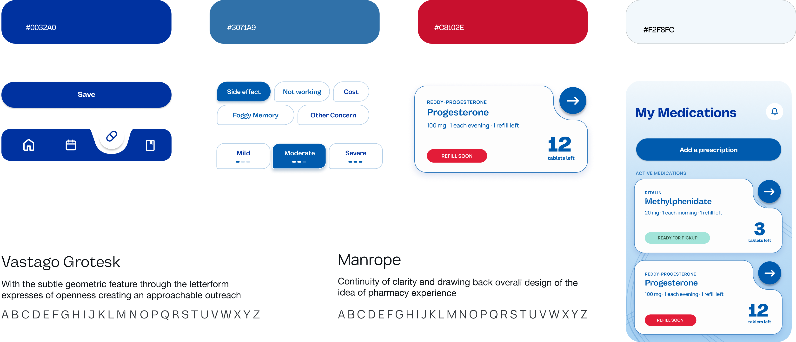
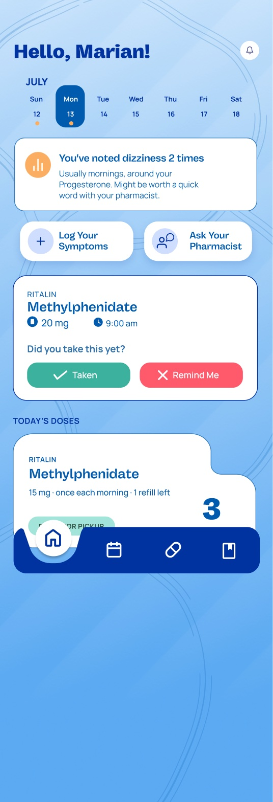
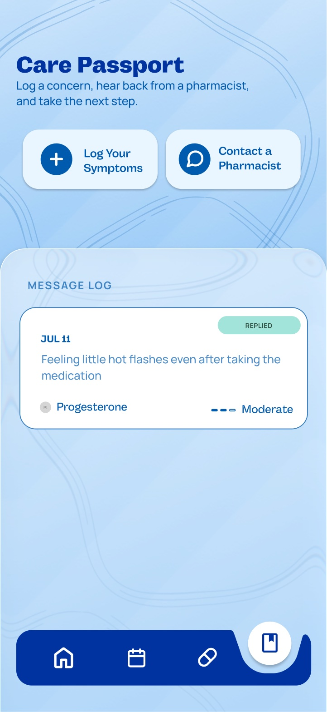
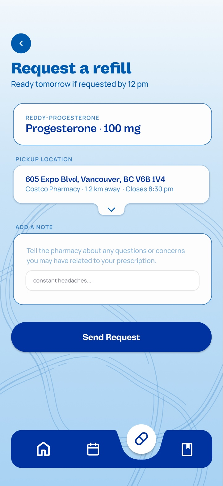

Care that doesn’t stop at the counter.
Costco CarePath
A medication companion for Costco Pharmacy members on long-term prescriptions, linking what happens at home back to their pharmacist.

Motivated at pickup,
alone by day ten.
People on long-term medication leave the pharmacy ready to start, then support disappears. 1 in 3 patients with chronic disease stop a new medication within 10 days, and half of patients on antidepressants stop early.
Members trust Costco Pharmacy, but see it as a pickup point. Refills, appointments and tracking each live on their own, and nothing connects a side effect at home to the pharmacist who could help.
How might we extend Costco Pharmacy’s relationship beyond the counter, so members on long-term medication feel supported during treatment?
Five testers,
three things to fix.
Moderated tests with long-term medication users, Gen Z to 55+.
We designed for members managing ADHD medication, chronic pain, birth control or a family member’s prescriptions. Our first version kept medications under Profile, booked pharmacist appointments and offered “Pal Insights”, AI notes on logged symptoms.
Information was scattered
Medications hid under Profile, so testers couldn’t see what they had left or when to refill.
No proof anything worked
After booking a pharmacist, testers couldn’t tell whether the appointment went through.
The AI felt like a bot
“Pal Insights” read as an AI diagnosis, and testers worried about what data it collected.
“Should show how many refills are left, reminders to call doctor to order more refills.”
Test participant
A pharmacy app,
calm, not clinical.
The final app, after testing, keeps Costco’s red and blue but softens them with rounded, organic shapes.
A home that says what’s next
Today’s dose with Taken or Remind me, and refill status before it’s urgent.
Logs that reach a person
Every symptom ties to a medication. Members choose which logs their pharmacist sees, then see when they reply.
Refill in one flow
Straight from the reminder: no Rx number, pick a pickup location, add a note for the pharmacist.



What testing
changed.
Each finding became a change. The same changes help the pharmacist: missed doses, symptoms and concerns arrive before the member does.
Medications got their own tab
Status labels like Ready for pickup and Refill soon, with tablets left in large type.
Every action confirms itself
Logging a symptom or booking an appointment ends on a clear confirmation and a next step.
Insights point to a pharmacist
Pal Insights became a plain pattern note that suggests a word with your pharmacist, never a diagnosis.
What I owned
Interaction design
- Home dashboard: dose check-in, pattern nudge, key actions
- Symptom logging flow, from severity to confirmation
Visual system
- Design system built on Costco’s red and blue
- Type scale and spacing pass across final screens
Research
- Early journey map
- Synthesis of the “felt like an AI bot” finding
Presentation
- Presented the design system and core flows in the final pitch